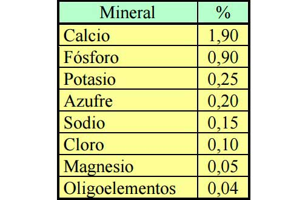
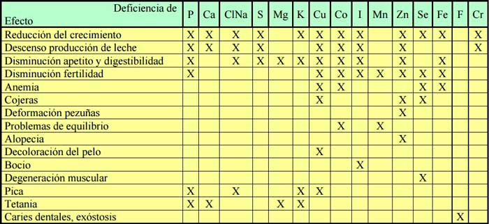

La salud del bovino se debe considerar como la resultante del sistema suelo-planta-animal-manejo, y el agravio de la misma en pastoreo debe buscarse en deficiencias de nutrimentos del suelo o del pasto y/o deficiencias en el manejo del suelo, el pasto o el animal. Entre esas deficiencias se encuentran los minerales y su manejo.
Los elementos minerales constituyen solamente de un 4 a 6 % del cuerpo del animal vertebrado, pero debido alas diversas funciones que cumplen en el organismo, son muy importantes en el campo de la bioquímica nutricional.
Un elemento mineral se considera esencial para el animal cuando:
♦ Siempre está presente en concentraciones semejantes en cada individuo sano de la misma especie.
♦ En la misma especie sigue el mismo patrón en los diferentes tejidos que lo contienen.
♦ Una deficiencia del mismo en la dieta consumida produce en el animal cambios bioquímicos definidos en los tejidos y síntomas clínicos y/o subclínicos característicos.
♦ Los síntomas clínicos y/o subclínicos de deficiencia y cambios bioquímicos en los tejidos pueden prevenirse o eliminarse con la adición del elemento a la dieta (suplementación mineral) y/o por vía parenteral (medicación).
Por lo tanto, una enfermedad carencial se define como los estados deficitarios de uno o mas componentes minerales de la alimentación que no llegan a cubrir los requerimientos del animal, siendo consideradas estas carencias, desbalances e interferencias en la nutrición mineral como enfermedades metabólicas. Se han identificado más de 60 elementos en las cenizas de los tejidos de los animales superiores, pero a muchos de ellos no se le ha determinado la función exacta dentro del organismo (Domínguez, 1993), si es que la tienen, ya que algunos pueden ser contaminaciones.
Podemos enumerar las funciones de los minerales esenciales en cuatro grandes grupos:
1) Componentes del esqueleto;
2) Componentes de los tejidos blandos, líquidos corporales y funcionamiento celular;
3) Actuación en acciones enzimática y hormonales, y
4) Componentes y actuación en la actividad microbiana ruminal.
El conocimiento de las funciones de cada uno de los minerales es de gran importancia, no solo para corregir las deficiencias y disminuir sus efectos negativos en la salud y producción, sino también para evitar intoxicaciones que se pueden causar por forrajes con excesos de alguno de ellos, o al implementar estrategias de suplementación, por las interacciones entre los minerales, especialmente cuando se trata de ciertos oligoelementos.
Los macroelementos o elementos mayores que son esenciales para los procesos fisiológicos en los rumiantes se encuentran en el organismo en concentraciones altas (por encima de los 70 mg/kg peso vivo) y son: fósforo (P), calcio (Ca), sodio (Na), cloro (Cl), azufre (S), magnesio (Mg) y potasio (K). Los requerimientos de estos minerales se determinan en gramos/día y el aporte que hacen los alimentos se expresa en porcentaje o en g/kg de materia seca. En general tienen, entre otras más, una función plástica (forman parte de los tejidos: huesos, músculos, tendones).
Los oligoelementos, elementos menores, microelementos o elementos traza se encuentran en el organismo animal en cantidades muy bajas (menos de 70 mg/kg peso vivo) y son: cobre (Cu), cobalto (Co), manganeso (Mn), cinc (Zn), iodo (I), hierro (Fe), selenio (Se), molibdeno (Mo), flúor (F), cromo (Cr), níquel (Ni) y silicio (Si). Su requerimiento se da en mg/día y el aporte por los alimentos en mg/kg de materia seca, en ppm (partes por millón) o en porcentaje. En general tienen una función reguladora en el metabolismo. El arsénico (As), aluminio (Al), vanadio (V), boro (Bo), bromo (Br), rutenio (Ru), estroncio (Sr), bario (Ba), cadmio (Cd), litio (Li) y estaño (Sn), han sido encontrados como esenciales para una o más especies de animales pequeños, y existe la posibilidad que lo sean también para los rumiantes, pero hasta el momento no se han encontrado deficiencias de ellos en ningún tipo de rumiantes y no existe información que sugiera que puedan causar problemas prácticos (Actualizado de Loosli y Beltrán, 1978). Es muy posible que existan otros oligoelementos esenciales, pero afortunadamente sus requerimientos son tan pequeños que su deficiencia es sumamente improbable porque esas cantidades pueden ser siempre provistas por los alimentos.
Figura 1: Concentración promedio de minerales en el organismo
Figura 2: Algunos de los principales efectos de las deficiencias y excesos de minerales en rumiantes.
Funciones Los minerales son necesarios para transformar la proteína y la energía de los alimentos en componentes del organismo o en productos animales, ayudando al organismo a combatir las enfermedades al mantener al animal en buen estado de salud.
Solos, asociados entre sí o combinados con grupos orgánicos, los minerales ejercen sus funciones esenciales a diferentes niveles dentro del organismo animal, y a pesar que hay diferencias importantes entre los distintos elementos, existe un esquema general para todos ellos. Un lugar donde ejercen sus funciones específicas es a nivel tisular, con funciones estructurales (formación de huesos y otros tejidos de sostén) o funciones metabólicas (componentes de enzimas o coenzimas, transmisión del impulso nervioso, etc.).
El otro sitio vital donde se requieren minerales en los rumiantes, en particular fósforo, sodio, azufre, cobre, cobalto y níquel, es en el rumen. Las bacterias y protozoos presentes en el medio ruminal, como todo ser vivo, requieren minerales para lograr un óptimo crecimiento, reproducción y producir la degradación de los alimentos. Gran parte de las mermas en la producción de los rumiantes que se suscitan por deficiencias minerales se deben a una baja eficiencia de conversión alimenticia provocada por la ausencia de minerales a nivel ruminal o presentes en concentración inadecuada (Durán y Carugati, 1988).

Una deficiencia mineral a este nivel determina alteraciones en el metabolismo de la microflora y microfauna, y esto produce bajas tasas de crecimiento de bacterias, hongos y protozoos, siendo la resultante una menor digestibilidad y aprovechamiento de nutrientes.
En general, los macroelementos contribuyen al mantenimiento de las propiedades fisicoquímicas del ambiente ruminal (poder tampón, presión osmótica y tasa de dilución) y son componentes celulares y activadores enzimáticos. Los microelementos regulan reacciones enzimáticas microbianas. Algunos también intervienen en la composición celular a nivel de estructuras como ribosomas o membranas (Igarza, 1994). Todo esto explica la magnitud de la importancia que en los rumiantes los minerales ingresen al organismo por vía oral.
Requerimientos Los requerimientos netos de un mineral incluyen aquellos de mantenimiento, que sirven para compensar las pérdidas endógenas, sumados a los de producción (crecimiento, gestación o lactancia). Estos requerimientos indican la cantidad del mineral que debe ser absorbido, por lo cual la dieta debe aportar una cantidad mayor (requerimiento bruto), el cual debe ser cubierto por la dieta. El total de microminerales aportado por la dieta que alcanza los tejidos, es lo que se define como cantidad biodisponible (BioD) o coeficiente de absorción (ver capítulos V y XI).
Fuentes Las fuentes de minerales disponibles para los animales en un sistema pastoril son el pasto y el agua. La gran variación de la concentración de los elementos, tanto en el agua como en las pasturas, hacen que el perfil de minerales que puede obtener un animal de estas fuente es virtualmente imposible determinarlo a lo largo del tiempo (ver capítulos V y VI).
a) Factores ligados al animal:
♦ Edad
♦ Estado fisiológico
♦ Estado sanitario
♦ Estado nutricional
♦ Tipo de mineral
♦ Tipo de portador del mineral
♦ Nivel en la dieta
♦ Interacciones
Los microminerales que de forma natural están presentes en las materias primas se liberan durante la digestión por acción de enzimas y del pH quedando en forma de aniones y cationes. La absorción tiene lugar por tres mecanismos distintos desde el lumen intestinal a los enterocitos:
Absorción pasiva: Los iones pasan al enterocito sin gasto energético sólo por equilibrar la concentración cuando ésta es superior en el lumen. Este mecanismo es marginal ya que casi siempre la concentración del ión es superior en el enterocito.
Absorción activa: Se produce a través de gasto energético.
Formación de complejos: del ión con otros ingredientes del alimento. Los complejos de alto peso molecular son más susceptibles a ser excretados en heces por ser de más difícil absorción. Los de bajo peso molecular son fácilmente absorbidos. Si el complejo se forma entre ión y aminoácidos, la absorción es la misma que cuando se trata de un aminoácido sólo. Una vez que el complejo está absorbido en el enterocito, es favorable que la unión ión-aminoácido sea poco estable para que el ión sea liberado y pase al plasma para su transporte a los diferentes tejidos.
Carencias En general, las carencias y/o desequilibrios de minerales producen un cuadro de situación nutricional que se manifiesta en los animales jóvenes principalmente con retardo del crecimiento y problemas osteoarticulares (Blood et al, 1986; Bingley y Col., 1978), y en adultos, especialmente por problemas reproductivos (Auza y col., 1982; Gooneratne y col., 1989; Igarza, 1994) y disminución de la producción. Los mas afectados son los rodeos que están alimentados exclusivamente a base de pasturas y/o forrajes conservados de mala calidad (Corbellini, 1986), siendo su incidencia más alta conforme se han intensificados los sistemas de producción y el nivel genético del ganado (Mc Dowell y Conrad 1984; Corbellini, 1985).
La deficiencia o el exceso de algunos microminerales afecta sutilmente al rodeo, con bajas resistencias a enfermedades (mastitis, neumonías, etc.), incidencia mayor de algunos trastornos y deficiente respuesta a los tratamientos o a la antibioticoterapia. Esta sintomatología inespecífica suele manifestarse antes que el cuadro clínico. Es decir, que una carencia subclínica de algunos microelementos no se nota a la observación visual, ya que el rodeo se podrá ver en buen estado general, ganando peso y alimentándose normalmente; pero como por ejemplo en el caso de deficiencia de zinc, fundamental en la síntesis de proteína, el rodeo seguirá comiendo, pero la energía se derivará a la producción de grasa y no de músculo. Es decir, habrá energía pero el animal será incapaz de producir la proteína necesaria.
Una deficiencia mineral en la dieta no conduce necesariamente a una enfermedad clínica. Entre los factores que predisponen a la enfermedad clínica se encuentran: la edad en que aparece la deficiencia, diferencias genotípicas en cuanto a los requerimientos, discontinuidad en las demandas debido a cambios ambientales, el estado productivo del animal, el riesgo debido a infecciones y/o infestaciones concomitantes, variaciones individuales en respuesta a la deficiencia y el volumen de las reservas funcionales del mineral. El curso de una deficiencia puede dividirse en cuatro fases: depleción, deficiencia, subclínica o disfunción y enfermedad clínica.
La depleción es el déficit en la dieta para mantener la concentración corporal del elemento, que cuando existen reservas corporales puede sostenerse durante mucho tiempo sin aparecer síntomas clínicos. Se produce cuando los requerimientos netos de un determinado elemento esencial son superiores a la absorción neta de dicho elemento a nivel intestinal. El organismo en este estado puede responder mejorando la absorción intestinal o disminuyendo las pérdidas endógenas. Hay un descenso del elemento en cuestión en los lugares de depósito, por lo que las concentraciones plasmáticas pueden permanece constantes. La deficiencia ocurre si la carencia en la dieta persiste, lo que está marcado por indicadores bioquímicos que señalan que el organismo no pueden mantener niveles constantes de los minerales necesarios para las funciones fisiológicas.
La fase subclínica o disfunción llega después de períodos variables de tiempo, donde las concentraciones o actividades de los minerales disminuyen, pero sin llegar a que los cambios en las funciones se manifiesten como enfermedad clínica. Necesita el diagnóstico de laboratorio para su detección segura. Esta fase de la enfermedad carencial es la más importante en producción animal, ya que ocasiona pérdidas económicas sin mostrar signos clínicos evidentes y específicos, produciendo disminución en los aumentos de peso, retraso en el crecimiento, disminución en el consumo, menor fertilidad, pica, etc.
La fase terminal, la de enfermedad clínica, que puede llevar a la muerte al animal, entra directamente en el campo de la medicina veterinaria. Los signos clínicos son manifiestos, aunque muchas veces inespecíficos, comunes a distintas deficiencias y enfermedades, lo que dificulta el diagnóstico. Los síntomas son específicos cuando la deficiencia es muy marcada o de larga duración. Generalmente se debe recurrir al laboratorio para el diagnóstico certero, pero aunque se diagnostique correctamente, se medique y el animal no muera, el daño económico ya se produjo. La disponibilidad de los microminerales puede verse afectada por agentes externos como el nivel de estrés del animal, porque las situaciones de estrés disminuyen la disponibilidad de microminerales como consecuencia de un descenso en la ingestión y un aumento de la excreción urinaria. Las deficiencias minerales que más afectan la producción de los bovinos para carne en la Argentina, son las originadas por la falta de fósforo, cobre, sodio, magnesio, cinc y selenio en las pasturas. La deficiencia de cobre generalmente es inducida por los excesos de molibdeno, sulfatos ó hierro, y la de sodio no solo por su deficiencia en las pasturas, sino tambien en el agua. Los minerales que pueden afectar al bovino por exceso son: el flúor, por aguas de bebida, el potasio, en pasturas templadas, que actúa deprimiendo la absorción del calcio y del magnesio, y el selenio, por pasturas seleníferas.
Otros Efectos Algunos minerales, sin estar en deficiencia, producen al ser administrados diariamente una mejora en la producción individual por efecto estimulante sobre algún parámetro digestivo o bien por balancear mejor el exceso de otro mineral, entre otros posibles factores. Por ejemplos, Buffarini y Homse (1999) en novillos sobre triticale con suplementación de maíz partido en el lote testigo y maíz partido más 60 g/día de suplementación mineral (Ca, P, Mg, S, Co, Cu y Zn) consiguieron en 134 días una diferencia de 18,67 kg por animal y Parra et al (1995) en una experiencia realizada sobre pastizal natural, concluyeron que la suplementación mineral mejora la tasa de degradabilidad ruminal de la dieta consumida, incrementa el consumo voluntario de forraje y la ganancia de peso y que la proporción de ácidos grasos volátiles (AGV) no se modificó con ninguno de los suplementos empleados.
Genetica Existe una diferencia racial en la incidencia de los minerales en la salud bovina. Por ejemplo, Hansen (1995) observó en zonas típicamente bociosas (deficientes en yodo) del NOA solo como excepción la patología bociosa en la raza Criolla Argentina, mientras que el problema fue muy evidente y frecuente en Holando Argentino. De esto deduce que el Criollo Argentino presenta una natural resistencia a adquirir la patología bociosa, posiblemente por mecanismos inmunogenéticos resultado de una selección natural de más de 400 años que lo adaptó a un medio carencial de yodo, desarrollando una mayor eficiencia para captar el elemento. En los ovinos también se ha encontrado una diferencia racial con respecto a los minerales, ya que la raza Merino asimila menos el cobre que otras razas.
Hay una variación genética del metabolismo mineral como adaptación a las condiciones inherentes a la deficiencia (Blood y Radostits, 1992). En ovinos, Valle et al (1997) trabajaron para obtener el índice de herencia de las concentraciones minerales en suero sanguíneo. Los índices obtenidos indican que fósforo (h2 = 0,478), potasio (h2 = 0,453) y cobre (h2 = 0,316) presentan un componente de varianza genética aditiva a ser considerada en los procesos de mejoramiento y selección animal.
Esto nos estaría indicando que es posible obtener un tipo adecuado de animal con capacidad para aprovechar, disponer, convertir y retener determinados niveles de minerales en su organismo, en concordancia con los requerimientos propios de la especie. Será necesario determinar si la concentración de minerales en el suero sanguíneo de los bovinos es una variable que deba ser tomada en consideración dentro de los planes de mejoramiento de la especie, especialmente cuando se busca aumentar el crecimiento del ganado en áreas deficientes.
Contaminaciones Un problema que puede surgir en los feedlots, pero no en el sistema pastoril, es que en las grandes concentraciones de animales la excreción en las heces de minerales inabsorbidos es causa de contaminación del suelo, pudiendo también contribuir a la eutroficación de los cuerpos de agua superficiales cuando las heces son derivadas a ellos (Audoin 1991; Williams et al 1999).
Conclusiones Los minerales son el tercer grupo limitante en la nutrición animal, teniendo el mayor potencial y el menor costo para incrementar la producción del ganado. Las deficiencias de minerales en nuestro país son numerosas. Algunas cursan con manifestaciones semiológicas, es decir, con signos clínicos claros, pero otras son subclínicas y requieren para su determinación diagnóstico de laboratorio. Estas últimas son las más graves, pues no se detectan fácilmente, pero pueden producir importantes pérdidas económicas por disminución de la producción.
Todos los sistemas de producción necesitan, en mayor o menor medida, suplementación mineral, tanto para corregir deficiencias como para estimular la producción. Sin embargo, en Argentina como en otros países, no todos los ganaderos suministran a su ganado sales minerales en cantidad y muy especialmente en calidad adecuadas y en forma permanente.
En la actualidad la salud del bovino está dominada, generalmente, por el uso de tecnologías costosas para el tratamiento de las enfermedades, muchas veces impulsadas por cuestiones comerciales, en vez que por tecnologías de manejo que permitan prevenirlas. El costo directo de la suplementación mineral representa un porcentaje muy bajo de los gastos empresarios, mientras que la ocurrencia de enfermedades carenciales (ya sea clínica o subclínica) puede causar una pérdida de rentabilidad significativamente alta. Así, los costos de prevención deben ser considerados no como un gasto, sino como una inversión.
Para aplicar correctamente medidas preventivas es conveniente conocer la problemática existente en cada región, evaluando los factores de riesgo y los beneficios de esas medidas. En la mayoría de los campos dedicados a la explotación agrícola-ganadera, se produce un continuo drenaje de minerales a través de las toneladas de carnes y granos que salen a la venta y que en general no son proporcionalmente repuestos al suelo; es indudable que ello llevará a un progresivo agotamiento mineral de los suelos a niveles peligrosos que se hará sentir tarde o temprano en la producción animal (Fader, 2001). A medida que la producción animal adquiere mayor importancia y las empresas ganaderas se hacen más intensivas, la influencia de los minerales se acrecienta. No hay recetas de aplicación masiva en todas las situaciones, ya que cada establecimiento tiene sus peculiaridades de manejo, alimentación, patología y producción, las que deben ser detectadas y correctamente diagnosticadas por el médico veterinario. Corregir un desbalance mineral lleva su tiempo y se deben esperar mejorías recién después de los 20 a 30 días de iniciada la suplementación.
La suplementación oral es la más natural y eficiente y la única vía por la cual se pueden aportar todos los minerales, en especial los macroelementos. El principio a utilizar es integrar la totalidad de los requerimientos minerales por vía de la suplementación oral con una suplementación dietética mineral completa. Los minerales que pueden emplearse en rumiantes tienen un futuro despejado de utilización debido al origen natural de la mayoría de ellos. El uso de la suplementación mineral manejada adecuadamente supone siempre una mejora en la eficiencia productiva. Su efectividad debe analizarse siempre, ya que existen otros factores que influyen en la producción que pueden interferir o enmascarar esa efectividad. En consecuencia, si se pregunta: ¿Cuál o cuales son el o los minerales más importantes en la nutrición del bovino?. La respuesta es: aquél o aquellos que son deficientes en el alimento en ese campo o zona. Matemáticamente, la suplementación dietética mineral se obtendría de la siguiente fórmula:
Requerimientos del animal - aporte por los alimentos = composición del suplemento dietético mineral